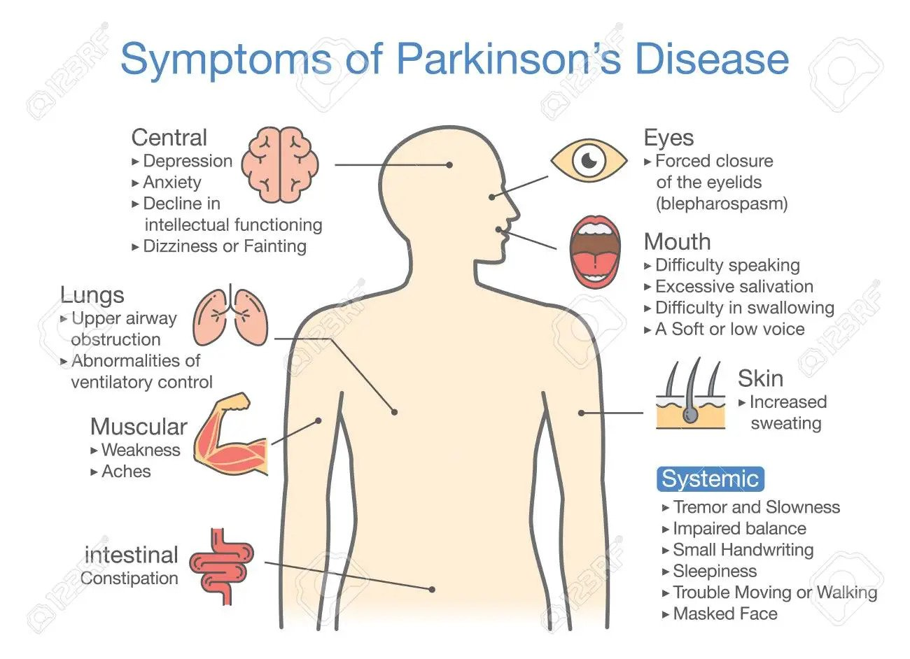

Parkinson's Disease
By Liam Strilchuk
About
Parkinson's disease is a disease that affects the substantia nigra, the part of the brain that controls movement. In particular, it affects cells that produce dopamine. The lack of dopamine prevents the brain from controlling movement efficiently.
Parkinson's is a chronic condition, meaning that it lasts for a long period of time and the symptoms get worse over time. Some people affected by Parkinson's are only minorly affected, but some eventually become severely disabled.
Symptoms and diagnosis
There is no specific medical technology that can diagnose Parkinson's disease. Instead, it is diagnosed by a neurologist, who assesses the symptoms a person is experiencing and their personal and family medical history to tell if they are at risk for the disease. Some of the symptoms include:
- Tremor or shaking in hands, arms, jaw, or head
- Stiffness of the limbs or trunk
- Slowness of movement
- Impaired balance or coordination

Treatment and research
There is currently no way to treat Parkinson's disease, but there are ways to reduce the symptoms. A type of surgery is available for some people called "deep brain stimulation", which uses small amounts of electricity to stimulate the part of the brain that produces dopamine. Therapy is also available, including both physiotherapy and speech therapy. Some medication can reduce the symptoms, including levadopa, which is absorbed by nerve cells and turned into dopamine, and inhibitors, which blocks the part of the brain that breaks down dopamine.
Lots of medical organisations, like Johns Hopkins and the National Institute of Health, are funding projects and developing new medications and technologies to help combat the effects of Parkinson's disease.
Where does Parkinson's occur?
Parkinson's disease occurs in every country in the world, though it kills significantly more people in less developed countries. The countries with the highest death rate from the disease are Qatar, Fiji, and Tajikistan. Canada is relatively unaffected by this issue, with only 3.46 deaths per 100,000 people, compared to 4.55 in the United States, 4.84 in Finland, and 4.31 in the United Kingdom.
Parkinson's was first diagnosed in 1817 by James Parkinson, and the disease's description was expanded in the mid-19th century by Jean-Martin Charcot, who analyzed information from around the world.
References
Mandybur, G., & Gartner, M. (n.d.). Parkinson's Disease (PD) Mayfield Brain & Spine Cincinnati, Ohio. Mayfield Clinic.
Retrieved May 27, 2022, from https://mayfieldclinic.com/pe-pd.htm
Parkinson's disease - Causes. (n.d.). NHS.
Retrieved May 27, 2022, from https://www.nhs.uk/conditions/parkinsons-disease/causes
Parkinson's Disease: Causes, Symptoms, and Treatments. (n.d.). National Institute on Aging.
Retrieved May 27, 2022, from https://www.nia.nih.gov/health/parkinsons-disease
Parkinson's disease - Diagnosis and treatment. (2022, March 24). Mayo Clinic.
Retrieved May 27, 2022, from https://www.mayoclinic.org/diseases-conditions/parkinsons-disease/diagnosis-treatment/drc-20376062
Parkinson's Disease: Hope Through Research | National Institute of Neurological Disorders and Stroke. (n.d.). National Institute of Neurological Disorders and Stroke.
Retrieved May 27, 2022, from https://www.ninds.nih.gov/Disorders/Patient-Caregiver-Education/Hope-Through-Research/Parkinsons-Disease-Hope-Through-Research